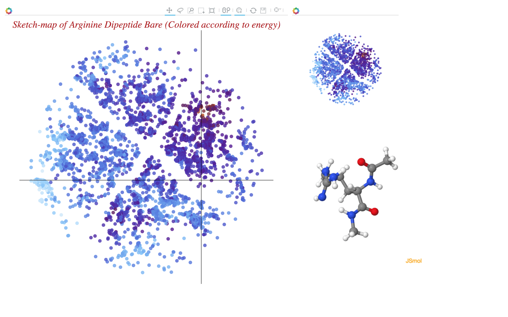

Please use firefox or Safari browser for full functionality. Other browsers like Google Chrome do not allow running local javascripts. This page give access to interactive sketch-maps for the four systems presented in "Comparing molecules and solids across structural and alchemical space" by S. De, A. Bartok, G. Csanyi and M. Ceriotti. The sketch-maps are colored according to their energy - please refer to the original manuscript for details. The interactive sketch-map viewer can be panned and zoomed with the help of a mouse. Moving the pointer on any point displays a small image preview along with the energy value. Clicking on a point will show the structure in an interactive 3d jmol viewer. The following image demonstatres the usage overview.
